Firebot
Firebot
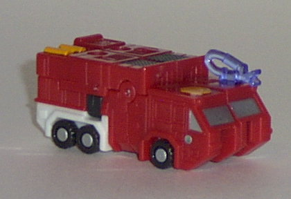 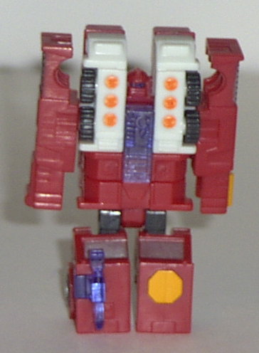 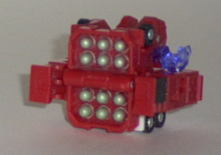
Difficulty of Transformation : Very Easy
Color Scheme : Red, off-white, gunmetal silver, and some bright orange, silver, transparent dark blue, and black
Individual Rating : 6.5
Emergency
Team
Allegiance
: Minicon
Size
: Mini-Con (3-pack)
Team Gimmick
: Each has a third "weapon
mode"
Overall Rating
: 6.9
Firebot
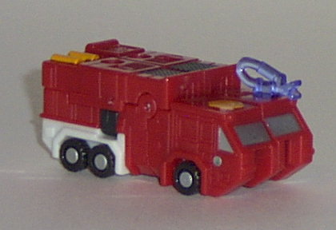
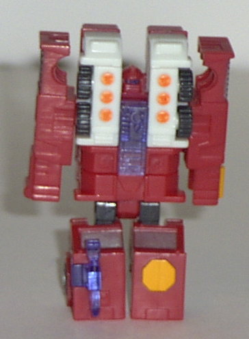
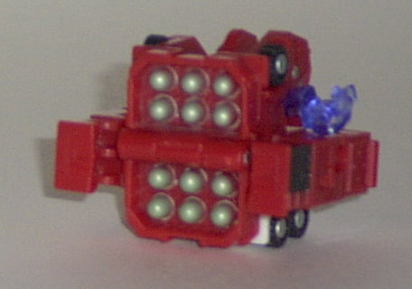
Difficulty of Transformation
: Very
Easy
Color Scheme
: Red, off-white, gunmetal
silver, and some bright orange, silver, transparent dark blue, and black
Individual Rating
: 6.5
Vehicle mode is a ambulance/fire
truck hybrid, and is pretty darn neat. No extras whatsoever, although the
front part does suffer a bit from having the knee joints there- it has
two hollow gaps on the bottom half. This mode is, otherwise, perfect- excellent
paint and mold detailing, and hey, it even has a littl' movable curled-up
firehose! (At least, that's what I think it is...) His Minicon symbol is
on the top rear of the vehicle, to the left side. His two Minicon ports
are on the center top of this mode- which is odd, but considering that
you're meant to attach him to other Transformers in weapon mode, it's easily
overlooked.
Robot mode is... pretty
crummy. Very odd proportions all around, although his paint and mold detailing
is still pretty nice. His shoulders are huge, his head is tiny and set
back too far into the chest, and his arms have no hands to speak of. His
legs are also pretty short proportionally, making him look kinda top-heavy.
He has articulation at the shoulders (at two points), the knees, and the
hips. However, for some odd reason, his hips are restricted from going
backwards, and his knees become lose if they're not in the vehicle mode
position or the "standing straight up in robot mode" position. Which, overall,
means that his articulation is pretty limited.
Weapon mode is pretty
decent. It's a missile pack (although no, the missiles don't actually fire)
which can be mounted on a larger Transformer. The arm pieces on the sides,
although used to connect, are slightly off-center in this mode, so the
missile pack hangs off one side a bit more than it does on the other, which
is a bit odd. Also, the moveable hose tends to get in the way in this mode.
But it's still pretty cool.
An excellent vehicle
mode, a crummy robot mode, and a good weapon mode. They pretty much balance
each other out, making Firebot an about-average Minicon with an extra mode.
Makeshift
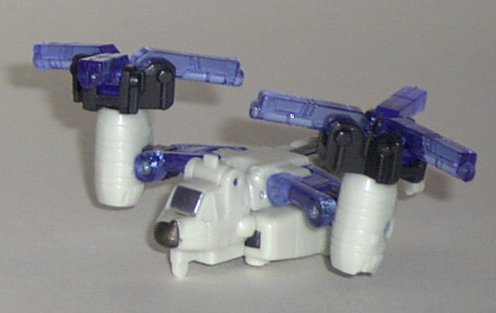
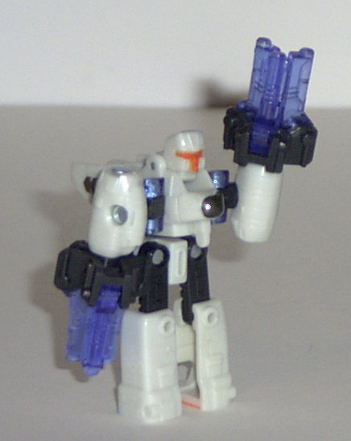
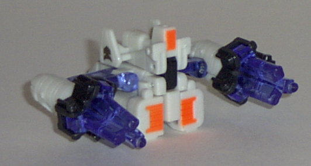
Difficulty of Transformation
: Easy
Color Scheme
: Off-white, transparent
dark blue, black, and some bright orange and brownish gray
Individual Rating
: 7.8
Vehicle mode is an osprey
helicopter. This mode is very nice- again, with no extras whatsoever. The
paint and mold detailing on the main body could use a LITTLE sprucing up,
but it's not too bad. The propellers indeed spin, although not quite as
well as they do on, say, Jolt. They can be tilted back or forward, though,
to direct Makeshift's "thrust" in a specific direction, heh. The Minicon
symbol in this mode is on the main body, on the right side. The Minicon
port is on the bottom of the cockpit.
Makeshift's robot mode
is pretty cool, too. His hands are a bit big and odd-looking as a side-effect
of his vehicle mode, though- but then again, it certainly makes him unique.
He does need some paint detailing on the front of his legs or arms, though.
Makeshift's main problem in this mode, however, is his articulation. He
can move at the shoulders (at two points), the hips, and the knees, but
the latter two can only go from side-to-side, which isn't useful for most
poses. Which basically means that you're limited to posing his hands in
this mode, and that's it.
Makeshift's weapon mode
is some kind of nondescript weapons battery with two rotary machine-gun
"turrets". Although a bit odd-looking by itself, it fits pretty well on
the larger Transformers. Pretty nice.
All of Makeshift's three
modes are pretty nice, especially his vehicle mode. His robot mode suffers
from some poor articulation, though, and his weapons mode is a bit odd
by itself. My favorite of the Emergency Team.
Prowl
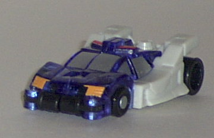
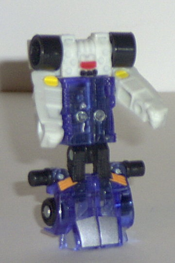
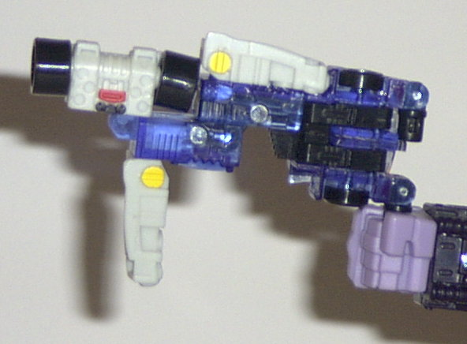
Difficulty of Transformation
: Very
Easy
Color Scheme
: Off-white, black,
transparent dark blue, and some bright orange, silver, yellow, and red
Individual Rating
: 6.3
Vehicle mode is a futuristic
police sportscar. This mode is, again, pretty nice-looking, with no extras.
He also has great paint and decent mold detailing. I don't really like
how such a large proportion of Prowl is transparent plastic, though. It
just... doesn't look right on the main body, especially on a car. The Minicon
symbol is on the front hood of the car, to the left of center. The Minicon
port is on the right side of the hood behind the windows. It's an odd place
for it, and seems more of an afterthought. But then again, he's primarily
going to be used as a gun instead of powerlinking the traditional way,
so there you go.
Prowl's robot mode is
really doofy-looking. His face is just molded into this big block that
is made up of the rear part of the vehicle. The wheels on the sides look
especially ridiculous, like they're big hair curlers or something. The
face itself looks odd too- like Prowl's wearing some kind of weird scuba
mask, which I can't say is appropriate for a police car. Also, just like
in the vehicle mode, his main body is made of transparent plastic, which
just don't look right. His legs, when in the same position, also just like
they're one solid block and not seperate feet. He has alright articulation,
though- he can move at the shoulders, hips, and knees.
Prowl's weapon mode-
obviously a gun- can be taken one of two ways. On one hand, the silohuette
is very convincing- it looks almost EXACTLY like a gun if you look at it
this way. However, on the other hand, the various details of the robot
and vehicle modes kind of mess up how convincing this mode is- after all,
most guns don't have tiny robot faces and windows on them- which is a bit
of a shame. Still, just look at the shape as a hole and you'll be okay.
Prowl has a very nice
vehicle mode, a goofy robot mode, and a so-so weapon mode. He also has
too much transparent plastic. All in all, I'd say he's my least favorite
member of the Emergency Team.
The Emergency Team is an above-average Minicon team with an inventive team gimmick- however, I'd hesitate to put it among the greatest Minicon teams of the series. Prowl's and Firebot's robot modes are very weak, and Prowl's weapon mode, while having a nice silouhette, is a bit unconvincing. Still, they're great for combining with your larger Armada Transformers. Moderately recommended.
Review by Beastbot